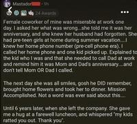
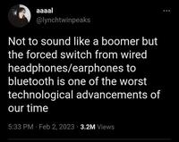

0




"Billionaire Bill Ackman's life was upended this February when his 26-year-old daughter collapsed in her Brooklyn apartment, suffering a brain hemorrhage that would render her unable to move, speak or see," writes the Washingon Post. But then...
The hedge fund manager did what any good father would do — at least, any father with vast financial resources and what friends describe as a "Mr. Fix-It" tendency. He sprung into action, getting her topline care at New York City's Mt. Sinai Hospital and consulting a network of well-connected friends all over the world. He helped her access a novel cell therapy that has been gaining traction among longevity enthusiasts, who are seeking ways to prolong human life. And then — motivated by a newfound desire to accelerate scientific research — he vowed to spend more than $400 million to launch an institute dedicated to longevity and brain health... He posted this week that the U.S. Food and Drug Administration, in May, gave his daughter Lucy's medical team a first-time emergency authorization to transplant mitochondria — the energy-producing part of human cells — from her leg muscle to her eyes, in the hopes that the tiny cell powerhouses would facilitate healing in her optic nerves and perhaps even restore her vision.
Ackman's story highlights the increasingly prominent role of the ultra-wealthy in making expensive medical bets on longevity treatments and other novel therapies, altering the direction of research as federal funding for science declines in the second Trump administration. But his saga is a deeply personal one, spurred by his daughter's medical crisis. The focus on longevity by Ackman, who made billions on Wall Street as a hedge fund manager, is aligned with similarly ambitious efforts from some of Silicon Valley's biggest names. OpenAI CEO Sam Altman has backed Retro Biosciences, a start-up whose goal is to add 10 healthy years to the human lifespan through cellular reprogramming. Amazon founder Jeff Bezos is reportedly a funder of Altos Labs, which focuses on cellular rejuvenation and resilience... Billionaire investor Peter Thiel, Google co-founder Sergey Brin and Oracle co-founder Larry Ellison are also deeply invested in life-extension methods and attempts to rewrite the biology of aging...
The therapy given to Ackman's daughter Lucy, known as mitochondrial transplantation, is of great interest not only to people who have suffered injuries, but to longevity-focused scientists who believe that mitochondria may hold promise for reversing some of the effects of aging... In recent years, scientists have discovered that mitochondria have many other functions beyond converting food into energy. They serve as clearinghouses for damaged cells, opening up the possibility that they can help with cell regeneration and healing, said Daria Mochly-Rosen, professor of chemical and systems biology at the Stanford University School of Medicine and co-author of " The Life Machines: How Taking Care of Your Mitochondria Can Transform Your Health."
"I am one of those who believes that focusing on mitochondrial health is a way to address many human diseases, including aging itself," she said. "It's exciting."
Read more of this story at Slashdot.
A new article about AI in The Economist argues that "Initial effects of the technology on employment look positive."
Perhaps AI will eventually make many humans unemployable — but there is no sign of it yet. On September 4th the Bureau of Labour Statistics reported that the American economy added 162,000 jobs in August, far above expectations. The unemployment rate is just 4.1%, lower than in almost 90% of months over the past half-century. Young workers, often cast as AI's first victims, are holding up remarkably well: the gap between unemployment among 20-24-year-olds and the overall rate is close to a multi-decade low.
Some companies and workers are being severely disrupted by AI. Hiring in professional and business services is running about 10% below the average in 2015-19. Tech giants like Microsoft and Meta are trimming headcounts as they reorganise their businesses around the technology. Smaller firms such as Block, the owner of Square and Cash App, and Intuit, the maker of TurboTax and QuickBooks, are replacing people with bots. American companies have announced some 16,000 AI-related job cuts a month on average so far this year, according to Challenger, Gray & Christmas, an employment consultancy.
But AI-related lay-offs gets lost in the churning jobs market where employers shed roughly 1.7m workers in a typical month. And the evidence so far is that AI is already creating a lot of jobs to replace those it has destroyed. The vast sums pouring into data centres and power generation have set off a race for construction and infrastructure workers. AI startups are hiring like there is no tomorrow. Incumbents racing to keep up are creating new AI roles. And by making some workers more productive, AI may be increasing demand for their services.
Add it all up, and The Economist estimates that AI has so far created around 1m new jobs in America. That easily exceeds the roughly 200,000 lay-offs attributed to AI since mid-2023, and appears more than enough to offset weaker hiring in many back-office roles.
Their article acknowledges that since January 2023 employment has fallen roughly 10% for customer-service workers and 15% for administrative assistants. But when The Economist looked at professions "closest to the AI boom" — engineers, software developers, mathematicians and data scientists — they found that since 2022 they've added roughly 730,000 jobs above trend. They see AI as creating new white-collar jobs for everyone from model and deployment engineers to new data annotators.
The chief economist at the Burning Glass Institute agrees, estimating that roughly 1% of professional jobs are now "AI jobs" — about 1 million positions in the U.S. — while in computer occupations and life sciences it's between 4% and 5%. (Data-center construction spending also increased 60% in one year, according to Census Bureau data, creating jobs for electricians, HVAC specialists, grid engineers, and machine technicians.) And "Indeed finds that installation and maintenance jobs at data centres advertise wages about 40% higher than comparable work elsewhere."
Read more of this story at Slashdot.
A new streaming TV channel shows films made with genAI, reports Engadget. "Fairground AI Creator TV" is free — and supported with ads — describing its material as "AI Cinema":
"AI-generated" can make it sound as though someone typed a sentence into a machine and came back five minutes later to find a finished movie. Fairground's catalog shows why that description can be too simple. Take Lost Garden: The Awakening of the Lantern Knight. According to its Fairground page, creator Frank Houbre wrote the world, characters, mythology, emotional arc and screenplay himself. AI tools were used mainly for animation and visual production, with other tools helping create voices and music before the episode was assembled in conventional video-editing software.
There's still one question, the article notes: "whether viewers actually want an AI-focused TV channel." More than 100 AI creators have contributed to the 24-hour slate of programming, although Variety points out several of them were discovered on social media.
The channel was recently profiled in an article by the Guardian. Its headline? "'Nightmare fodder': Roku's AI slop channel is even worse than expected." (And its subheading calls it "a 24/7 channel devoted to low-quality AI content for viewers sick of watching real people move...")
What about people who hate plot and vision and the sight of people speaking convincing dialogue that synchronises perfectly with the movement of their lips? What about the people who just want to watch an unyielding torrent of eerily weightless nightmare fodder? Well, good news. Roku has finally caught up... Early reactions were, to put it mildly, not great. The Verge compared it to eating from a trough, while Futurism called it "bottom-of-the-barrel slop"...
On the plus side, the channel is evidence that artificial intelligence has come on in leaps and bounds over the last couple of years... However, it is still awful. Categorically, catastrophically awful. The channel doesn't so much offer shows as a drifting dreamscape of bad ideas rendered as horribly as possible with no thought paid to scheduling. At one point on Wednesday, a shrill high-frequency anime gave way to a long and staid German-language short about Nazi bureaucracy. After that came a sort of Gladiator ripoff that had all the dynamism of an exhibit you'd see at the fourth-best museum on a poorly planned family holiday.
Read more of this story at Slashdot.
A new study published Friday in AGU Advances "depicts the most advanced picture yet of how a rare but massive solar storm could affect some US industries and electric systems more than others," reports CNN.
"During a 250-year solar storm, the East Coast would have widespread potential for grid failure."
Researchers modeled what a Carrington Event — a 1-in-150-year geomagnetic storm or even rarer — could mean for the modern day. They estimate the US economy would lose about $1.5 billion to $2 billion per day from direct and indirect costs, as millions of people face power outages. The findings show the most vulnerable areas are the Northeast and the Northern Plains, especially locations at higher latitudes.
No one knows when the next big storm will hit. While the most severe geomagnetic storms are labeled as once-in-a-century or rarer, these events don't follow a fixed schedule. "That timing only averages out on very long timescales," said Anna Kelbert, a geophysicist at the Harvard-Smithsonian Center for Astrophysics, who was not involved in the study but previously studied solar storm effects on power grids. "The event can occur at any time, as soon as a week from now, or centuries later...." [Shawn Dahl, service coordinator at the Space Weather Prediction Center operated by the National Oceanic and Atmospheric Administration in Boulder, Colorado], said the sun is now coming down from a period of heightened activity, which is also when some of the biggest storms to hit Earth have occurred in the past. "We still need a lot of work to be ready...."
"We haven't really seen events like this size in the modern era, where we've had all of this high technology and we've had the power grid of this size," said Ed Oughton, researcher at George Mason University and lead author of the new study... Because the US grid's actual structure is proprietary for security reasons, the team used engineering models to create various network and transformer setups including the 10,464 substations and 16,256 transmission lines found across the country... The grid structure also contributes to higher risk in some areas. For instance, the eastern US is linked together in a single grid interconnection. A voltage issue in Maine, if not isolated early, could cascade through the grid to Washington, DC. The West works similarly, whereas the Texas interconnection operates mostly within the state...
Power is restored over time depending on any alternative electrical paths that could bypass the substation or availabilities of spare transformers, for instance. "This nationwide analysis shows that we are currently ill-prepared to face a major magnetic storm, and that the societal impacts would be catastrophic," Kelbert said.
"The study estimates power disruptions for 5.1 million people and 135,000 businesses," according to the article, and "The outages could last from hours to days to weeks depending on the damage and resources available to get back online, said Oughton."
Read more of this story at Slashdot.
Thursday 404 Media reported that Flock taught America's cops "how they could surveil the No Kings protests" against President Trump (as well as "small parades") in a webinar last year that described "using a mix of Flock's technology and law enforcement's own databases."
In the webinar, Flock's director of market management Caity Peak explains how real time crime centers — which are police surveillance centers that utilize Flock cameras and other surveillance cameras — can be used for emergency response, but can also be used to surveil "established events" like 4th of July fireworks displays, parades, bike races, Mardi Gras, and protests. The webinar shows just how routine the idea of always-on surveillance has become, and how casually it is used during extremely innocuous events. Peak explains that police can use FlockOS, a software platform that combines Flock's automatic license plate readers (ALPR), drones, gunshot detectors, 911 data, and other surveillance cameras (including ones Flock does not own) into a "single pane of glass" or single piece of software to look at various types of surveillance in one place during both emergencies and relatively mundane events in a city or town.
"Imagine that you're an incident commander, and you're working this No Kings Protest," Peak explains while a dashboard shows a series of surveillance tools overlaying the city of Denver. "If I'm somebody assigned a traffic post that's working this No Kings Protest, I really don't have time to go in [...] and look at all these places [for different intelligence]. This is an example of viewing all of that in one place...." The dashboard Peak shows includes traffic information, a "response plan" for the protest, the floor plans of nearby buildings, as well as a series of video feeds of both outdoor-mounted cameras and cameras inside businesses and government buildings.
404 Media and the Electronic Frontier Foundation previously showed that police have specifically used Flock cameras to monitor the No Kings protests and other First Amendment-protected activity... This webinar shows this type of surveillance is not anomalous, and is specifically taught by Flock. The webinar also shows that Flock's latest public stance — that its ALPR cameras are noninvasive technology, that they take only static images at a single place and time, and that they are primarily used to solve the worst crimes — is wildly misleading. Flock has time and time again pitched itself to police as a sort of operating system to solve crime and do real-time surveillance and predictive policing. ALPRs are just one part of this broader surveillance apparatus that Flock has created, markets to police, and teaches them how to use.
Read more of this story at Slashdot.
"No rocket had ever reached orbit from Western European soil — until today," reports Space.com.
DW.com reports that a Spectrum space rocket from German company Isar Aerospace launched today from the Arctic Norwegian spaceport at Andoya:
"Germany has spaceflight capabilities," said the country's Ministry for Research, Technology and Space on X, praising a "milestone that impressively demonstrates our country's innovative strength and technical expertise". This was the German company's second attempt to launch the Spectrum rocket into space. The first attempt, which took place 18 months ago, was unsuccessful.
The Spectrum rocket is designed for small and medium-sized payloads. It carried five smal satellites and an in-flight technological experiment, the company said. According to Isar Aerospace, the launch was for "both the vehicle's qualification mission and its first flight carrying payload." The move is believed to bring Europe closer to being able to offer satellite flights from its own territory. Several countries voiced interest in the growing market of commercial space missions, including Britain and Sweden...
Isar is also working on the development of a second launch site, located in Canada. The company said that while the US launched 198 rockets last year, Europe's tally was just eight. Isar's goal is to produce some 40 rockets a year. Although the rocket is not yet ready for mass production, Isar has already received orders through 2028.
Today's launch webcast was produced in collaboration with NASASpaceflight, notes Space.com. And they note that Spectrum chief engineer Nikolaos Perakis says"This is just the beginning... I'm really looking forward to the next steps."
Reuters quotes this statemnt from Norway's minister of industry and commerce, Cecilie Myrseth. "The fact that we can now launch satellites from Andoeya strengthens Norwegian and European security in the turbulent times we live in."
Read more of this story at Slashdot.
This year's Hugo Award winners were announced last weekend at Worldcon — the world's longest-running science fiction/fantasy convention. The Orange County Register reports there were fans "clad in capes, gowns and elaborate character costumes," with famous attendees including Game of Thrones author George R. R. Martin, who held a book signing:
Martin attended his first Worldcon in 1971 in Boston, before he published his first novel. Fresh out of his graduate studies, Martin, then 22 years old, found a community of fellow comic book fans and genre enthusiasts... "It was a transformative experience," Martin said. "Worldcon is the heart of the science fiction fandom." Four years later, Martin won his first Hugo Award for his novella, "A Song for Lya," which made him the award's youngest winner — a record he held until Sunday night, when 25-year-old Los Angeles writer H. H. Pak took home the award for Best Novelette. [Read that novelette here...]
Notable writers and artists, such as "Star Trek: The Next Generation" screenwriter Ronald D. Moore and graphic artist Stan Sakai, announced the [Hugo award] categories. In their acceptance speeches, winners acknowledged the enduring strength of their community amidst rapidly evolving physical and social environments. They also praised the power of speculative fiction in facilitating dialogue on real-world issues and the importance of human-made art. Among the winners were C. B. Lee, whose novel "Coffeeshop in an Alternate Universe" won the Lodestar Award for Best Young Adult Book; the team behind Apple TV's "Murderbot: 'All Systems Red," which won for Best Dramatic Presentation, Short Form; and John Scalzi, who took home the trophy for Best Series [for Old Man's War]. The night concluded with its most anticipated award — Best Novel — which went to " The Everlasting" by Alix. E. Harrow, a fantasy time-loop novel about a scholar forced to rewrite his nation's history.
AppleTV's Murderbot episode beat nominated episodes from other several popular streaming series:
Doctor Who (âoeThe Story & the Engineâ)
Pluribus (âoeWe Is Usâ)
Severance (âoeCold Harborâ)
The Wheel of Time (âoeThe Road to the Spear)
Overall the awards committee had received 23,543 nominations this year for 4,299 works and individuals, according to the official Hugo Awards site. Other interesting winners:
Best Graphic Story or Comic: A Wizard of Earthsea: A Graphic Novel, written by Ursula K. Le Guin, adapted and art by Fred Fordham
Best Short Story: "In My Country" by Thomas Ha
Best Novella: The River Has Roots
Best Related Work: Inventing the Renaissance: The Myth of a Golden Age by Ada Palmer
Best Dramatic Presentation, Long Form: Sinners
Best Game or Interactive Work: Clair Obscur: Expedition 33
Read more of this story at Slashdot.
39 U.S. congressional candidates "reported paying for an OpenAI subscription this election cycle," writes the Washington Post, citing campaign finance disclosures.
This means the campaigns "are using the technology to court voters — despite limits imposed by leading AI companies to protect elections from the technology's risks."
Two [candidates] said explicitly in filings that they had used the subscription for advertising, even though the company's policies prohibit candidates from using their tools to generate ads.
Another candidate disclosed using AI to draft and personalize political messages or create synthetic media, though they did not specify which software they were using... Around 30 political action committees and parties have reported payments to OpenAI, with the Republican National Committee ranking as the company's largest political spender at roughly $9,700, the analysis found... Political consultants say the disclosures understate how many candidates are using ChatGPT and other AI tools to craft messages for voters... "For the most part, people are using it to write their emails, write their ad copy, write their scripts," [according to Eric Wilson, a Republican digital strategist who has advised campaigns on AI]. "But no one is going to go around saying, 'I'm using AI.'"
The lack of transparency from campaigns reflects a paradox facing politicians: Generative AI is growing ubiquitous, and candidates could be at a disadvantage if they're not using the tools. But voters are less likely to trust messages they know were generated with AI, studies have found, making campaigns loath to disclose using it. Political consultants expect that as Election Day approaches, more campaigns will outsource AI-generated ads and materials to super PACs, much as they do now with negative ads. Katie Harbath, CEO of the tech policy consulting firm Anchor Change and a former Meta executive, said there are many parallels between negative campaign ads and AI: Voters say they find such ads distasteful, but politicians keep using them because they work. "Typically, you would give some more negative stuff and more risky stuff to those [outside] entities," said Harbath, author of the upcoming book "Disrupting Politics: A Front Row Seat to the Collision of Technology and Democracy".... "You're starting to see the tension on the left about using it, where they're saying, 'If the right is using it, why aren't we?" Harbath said. "It can be a huge disadvantage if you're not using this in voter-facing materials...."
AI companies have developed policies to prevent targeted disinformation. But a Post analysis found that OpenAI unevenly enforces its restrictions, making it possible for campaigns to circumvent its election rules. In late July and early August, The Post prompted ChatGPT to generate targeted campaign messages. When asked to craft fundraising text messages targeting moms on behalf of a female veteran running for office, ChatGPT produced multiple tailored texts in an apparent violation of company policies. But when given the same prompt this week, the chatbot declined to produce the messages. "I can help with general campaign fundraising language, but I can't draft political persuasion or fundraising messages specifically targeted at a demographic group such as moms," the app responded. The chatbot also inconsistently enforced rules that prohibit campaigns from using its tools to write emails to voters. In tests this week, the chatbot at times complied and wrote an email soliciting donations on behalf of a specific candidate. But given the same prompt later on the same day, it denied the request...
Wilson, the Republican political consultant, said OpenAI should get more feedback from political consultants and campaigns on its policies, because the rules can at times seem arbitrary or contradictory. It doesn't make sense, for example, that a campaign can use ChatGPT to develop its policy on early-childhood education but not to create a social media post promoting that policy, he said. Political consultants are primarily using AI for internal tasks, a survey earlier this year from the American Association of Political Consultants found. Fifty-seven percent of the consultants surveyed reported using AI for their work on a daily basis, up from 34 percent a year earlier.
"So far, election-related deepfakes have been quickly debunked or gained little traction in U.S. elections," the article acknowledges.
"More than 30 states have created a patchwork of laws limiting how politicians can use deepfakes in campaigns, but states often have limited resources to enforce the laws, and some have been challenged as unconstitutional."
Read more of this story at Slashdot.
Reuters reports:
Liquid Network, a Bitcoin-based payments and settlement network, said on Sunday that about $320 million was withdrawn from its federation wallet in a hack.
"Purported white-hat hackers" withdrew around 4,000 of the 4,200 bitcoin held in its Liquid Federation wallet, Liquid Network said in a post on X.
"Liquid wallets will be impacted," their post concluded, adding "and we're sorry for any inconvenience."
Read more of this story at Slashdot.
Slashdot reader DeanonymizedCoward writes: Reuters reports that the US Military is disabling ad tracking on devices, to prevent adversaries from buying publicly-available tracking data to assist in targeting troops. Military officials say that they have disabled trackers on a variety of computers and mobile devices, according to letters released on Friday by Sen. Ron Wyden, and following reports that commercially-available tracking data has been used to target troops in the Middle East....
Wyden said in a statement that it was clear that the military's efforts "have not been effective at neutralizing this threat." U.S. Representative Pat Harrigan, a North Carolina Republican, said that U.S. enemies "should not be able to pull out a credit card and buy information that helps them track American troops." Rep. Harrigan remains silent as to the larger question of whether the general public should be able to pull out a credit card and buy information that helps them track anyone they please.
"The Pentagon said in an email it would respond to the lawmakers directly," Reuters reports:
The Army said in a statement that advertising IDs had been blocked on Windows computers "since before 2021" but that Android and Apple mobile devices had only had it disabled by default "since at least February 2026...." The effort to reduce the location data generated by smartphones comes as military officials weigh increasingly strict restrictions on phone use overall. In July, Reuters reported that some deployed personnel in the Middle East could be ordered to surrender their phones amid concerns that mobile videos they were posting to the internet were helping Iran target American bases in the region.
Read more of this story at Slashdot.
The United Nations has an announcement. "The UN General Assembly has voted overwhelmingly to encourage governments, schools and tech companies worldwide to stop using maps that make Africa look far smaller than it really is."
By 164 votes to one, Member States on Friday endorsed a resolution promoting map projections that more accurately reflect the true size of continents — the culmination of an African-led campaign against the 16th-century Mercator projection, still the most widely used map in the world. The United States cast the sole vote against, dismissing the initiative as part of a "radical ideological project." Six countries — Estonia, Georgia, Lithuania, Moldova, Serbia and Ukraine — abstained.
The resolution does not ban the Mercator projection or impose a replacement. Instead, it encourages governments, schools, international organizations and technology companies to use the Equal Earth projection and other so-called equal-area maps when relative size matters, and to teach the limitations of any flat map in representing a spherical planet.
Behind that seemingly technical debate lies a larger argument about history and power: whether a map designed for European sailors in the 16th century has, over generations, distorted not only geography but perceptions of a whole, vast and complex continent... [With Mercator maps] landmasses appear increasingly enlarged the farther they are from the Equator. Greenland, for instance, can look roughly comparable in size to Africa, even though Africa is about 14 times larger. Northern Europe and North America are similarly magnified, relative to equatorial regions. Despite its original navigational purpose, Mercator remains common in educational, media, digital and official materials. The resolution says those distortions have contributed to the "symbolic minimization" of Africa and perpetuated an unbalanced view of the world...
Equal-area maps do not make Africa larger; they remove the exaggeration Mercator gives landmasses closer to the poles.
The UN notes that hours before the vote, France's foreign minister announced the country was planning to abandon Mercator for its maps of the world.
Read more of this story at Slashdot.
Rockstar Games and the mayor of Miami-Dade county are discussing a joint marketing campaign transforming parts of the county to look like areas from Grand Theft Auto 6, reports the blog Rock Paper Shotgun:
The proposed publicity event would include "an immersive arrival experience" at Miami International Airport. with signs for Vice City and planes coated in GTA 6 livery, together with branded Metromover skytrains and specially designed manhole covers... [I]t proposes a dockyard visual installation inspired by GTA 6's Port Gellhorn, incorporating cargo containers, cranes, and cruise ships. There's also talk of a "Vice City Motor Fest", which might feature "classic cars, customized vehicles, lowriders, motorcycles, tropical graphics, and local entertainment within a controlled, family-appropriate setting." Attendees would presumably be discouraged from nicking the cars...
As it happens, Rockstar have embedded a team in Miami to sponge up the ambience, research Miami culture, and study the habits of residents — including "ex-criminals", in the careful phrasing of senior vice president of narrative Rupert Humphries.
The pitch suggested murals, "wrapping" buses (with special signs at transit stops), and even a Vice City-inspired baggage-claim installation at the airport. The pitch also suggested the library offer recording equipment for "Vice City Radio" to capture music (as well as podcasting, oral histories, neighborhood storytelling) — along with " limited-edition GTA VI-inspired library cards, collectible bookmarks, Miami-themed reading and music lists, and demonstrations of the new recording and production equipment."
Though nothing has been formally agreed to or approved, the mayor's office confirmed the discussions, reports Axios.
The sheriff of Miami-Dade county "has publicly opposed plans to transform the city into a real version of Grand Theft Auto 6's "Vice City", reports Kotaku. The sheriff's reason? The videogame city "includes murder, robbery, drug trafficking, carjacking, violence against law enforcement," as well as "other conduct" that the police department works "every single day to prevent."
Read more of this story at Slashdot.
The Free Software Foundation (FSF) is now on Bluesky, they announced this week. But "We can't advocate that you sign up for a Bluesky account like we do with Mastodon or PeerTube since signing up for Bluesky means loading the registration page's nonfree JavaScript..."
While federated, Bluesky is generally not considered part of the "fediverse" network of social media services like Mastodon and PeerTube, as it uses its own AT protocol rather than ActivityPub... Hosting your own Bluesky "Personal Data Server (PDS)" and relay is technically possible, but generally far more difficult and resource-intensive than spinning up an instance of Mastodon, let alone any of the lighter-weight ActivityPub servers like Akkoma or Starling.
Much of the Bluesky codebase is freely licensed. This allows users to run, copy, modify, and share large parts of the codebase. However, Bluesky's web client still serves nonfree JavaScript to users, just like its registration page. (Since our script was written for us specifically, we have not extensively vetted all available clients.)
Why did we sign up? Simply put, we have to continue to reach people where they are. Bluesky is a decent choice for us that evades many of the issues of other, more problematic networks... We accepted running Bluesky's nonfree JavaScript a single time if it meant being able to reach people who have never heard of software freedom.
The FSF's blog post advises supporters "If you're on social media, follow the FSF on Bluesky and on Mastodon today."
Slashdot also has an account on Blueky.
Read more of this story at Slashdot.
The EV blog Electrek reports:
A Clinton Township, Michigan man was charged $418 for a single EV charging session at Elder Hyundai's Macomb Township store after finding the charger listed as publicly available on the EVgo app, but didn't discover the charges until after wrapping up his 40-ish minute charging session. "I was flabbergasted," explained Stanley Kpenkann, who had been driving a rented Chevy Bolt EV at the time. "Never in my wildest dreams did I think I would be saddled with a bill of $418 for a charging session."
After calling EVgo to report the error, he found that the exorbitant charge wasn't a mistake at all - Elder Hyundai was charging customers an eye-gouging $5 per kWh, plus another $5 for every minute connected.
A local news report notes that "After back-and-forth with EVgo, the company processed what it called a goodwill refund of $405." (And the dealership argued their charger was reserved for its own customers and vehicles, so they set prices high to deter outside use.)
But Electrek argues the story "speaks to much larger problems among the EV charging business in particular and car dealerships in general..."
[In June] Plug & Play EV's Steve Birkett took to LinkedIn to call out his local Hyundai dealer in Union, NJ for charging a ridiculous $15 per kWh to top off his IONIQ 5 (!)... Even worse, he noted that a number of area dealerships that had listed their ports as "public" were actively discouraging public use with signs and stickers designed to turn people away...
[U]nlike gas stations, EV charge point operators in many states aren't required to clearly advertise what they'll charge before a driver plugs in in the same way that gas stations are: with clearly legible signage that's visible from the street.
Read more of this story at Slashdot.
TiVo is notifying customers about changes to "one of its longest-standing and most popular DVR features," reports the blog Cord Cutter News:
Starting November 2, 2026, the current version of SkipMode that allows users to jump over commercial breaks with a single button press on the remote will no longer be available. The company is instead preparing to test a new paid add-on called Premium Auto Commercial Skip.
SkipMode has been a core part of the TiVo experience for years. After a supported show finished recording, the service added markers that let viewers leap from the end of one program segment directly to the start of the next, bypassing the ads in between. On newer TiVo Experience 4 devices, users could even set the feature to automatic so commercials were skipped without any remote interaction. The feature was limited to popular prime-time programming on major networks, typically appearing a short time after a show aired.
Under the new plan, that one-button and automatic functionality will disappear from the standard service. Viewers will still be able to skip commercials the traditional way by using the 30-second skip button or the fast-forward control on their remotes. Those manual methods have existed on TiVo boxes for more than two decades and do not rely on the company's commercial-detection data.
In November, TiVo will offer a 30-day free trial of the new Premium Auto Commercial Skip service. After the trial ends, customers who want to keep the automatic or one-button skip capability will need to add it to their accounts for an extra monthly fee.
The company has not yet published the price.
Thanks to long-time Slashdot reader AmiMoJo for sharing the article.
Read more of this story at Slashdot.
Tae Kim / Key Context : Astra working with Blender via computer use feels like magic, showing computer use could be the fourth demand wave after chatbots, reasoning, and agentic coding — AI computer tool use is a big deal. — A reminder that I'm on vacation this week, but the flood of impressions people …
Jack Clark / Import AI : Google DeepMind published a paper on how 100 agents tasked with solving math problems learned to cheat and how some agents tried to counter the cheaters — Plus, a machine hermeneutics story — Welcome to Import AI, a newsletter about AI research. Import AI runs on arXiv, cappuccinos, and feedback from readers.
Andy Bounds / Financial Times : Belgian prosecutors say they arrested a Belgian-Chinese man in May on suspicion of stealing secrets from bankrupt gallium nitride semiconductor maker Belgan — Prosecutors in Belgium cite ‘indications’ suspect took role at tech company in China months after joining now-defunct semiconductor maker Belgan
The Guardian : Matt Clifford steps down as the chair of the UK government's science and tech research unit after joining Anthropic, following conflict of interest concerns — Matt Clifford forced to stand down amid disquiet from senior MPs over his new full-time job at AI company
Bloomberg : Sources: London-based UForce, which makes unmanned vehicles for air, land, and sea, is seeking about $500M led by Valor Equity at a ~$5B valuation — UForce, a London-based drone startup, is in discussions to raise new financing at a valuation of about $5 billion, according to people familiar with the matter.
Charlotte Tobitt / Press Gazette : The US raises censorship concerns over the UK's proposals to force tech platforms to put “trustworthy” news providers at the top of social and video feeds — News Media Association warns forcing prominence for ‘trustworthy’ news could end up harming sector.
Bloomberg : Sources: ByteDance founder Zhang Yiming is overseeing the development of an AI model for real-time spatial video, which could launch as soon as next month — ByteDance Ltd. is readying an AI model geared for real-time spatial video generation, taking on Meta Platforms Inc. and Alphabet Inc …
Stephen Council / Business Insider : A look at Anthropic's Labs team, a ~20-person group led by cofounder Ben Mann that acts as an internal startup incubator for developing flagship products — Inside Anthropic, an unorthodox group can take a lot of credit for the AI company's meteoric rise. — The company's Labs team …
Cade Metz / New York Times : Insilico, which uses AI to accelerate drug discovery, says early data shows rentosertib, a drug whose structure was generated with AI's help, could slow aging — Artificial intelligence was used to help develop a drug candidate, rentosertib, for a rare lung condition.
Financial Times : A look at the 2019 US criminal case against Huawei, with an upcoming trial over racketeering charges, including sanctions evasion and corporate espionage — Five years after finance chief Meng Wanzhou's release from detention in Canada, the company itself is going on trial
Bloomberg : Shein lost about $5B in market value since its IPO, dropping to ~$21B, as it finished one of the worst opening weeks after a major Hong Kong listing — Shein Global Holdings Ltd. has lost about $5 billion in market value since its initial public offering as it finished one of the worst opening weeks …
Nikkei Asia : Huawei unveils the Mate XT2, a trifold phone powered by the Kirin 9050 Pro, an in-house designed chipset that it says is entirely free from US restrictions — TAIPEI — China's Huawei Technologies has unveiled its first triple-folding smartphone powered by chips that it says are free …
Cal Newport / New York Times : How Rationalism, a movement pioneered by Eliezer Yudkowsky focused on existential superintelligent AI risks, influenced top AI leaders and their alarmist claims — As the tech elite prepares to make billions from the A.I. revolution, the public mood about this technology has taken a dark turn.
Yan Zhuang / New York Times : A record 12.7M graduates are entering China's workforce in 2026 as AI adds uncertainty to an oversaturated job market with a shrinking pool of entry-level roles — A record 12.7 million young people are looking for jobs as the country embraces artificial intelligence — and as the technology begins to upend the work force.
Reuters : LA- and Bengaluru-based hyperspectral orbital imagery startup Pixxel raised a $100M Series C led by Temasek and Seraphim, bringing its total funding to $195M — Indian space tech startup Pixxel said on Monday it had raised $100 million in a Series C funding round led by Singapore state investor Temasek …